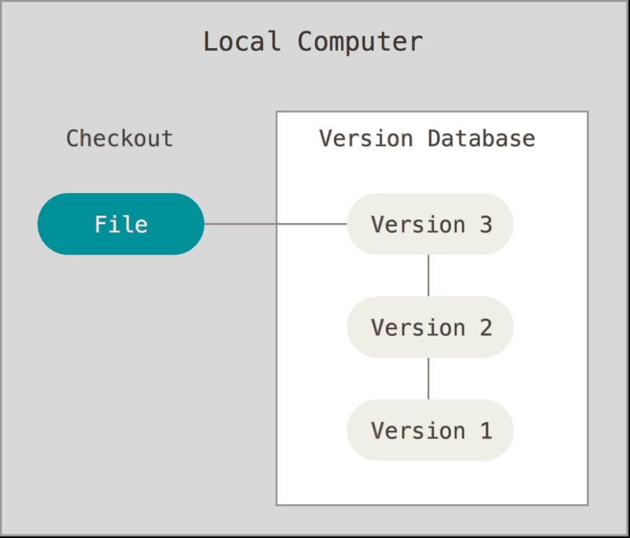

Keyboard shortcuts:
N/СпейсNext Slide
PPrevious Slide
OSlides Overview
ctrl+left clickZoom Element
If you want print version => add '
?print-pdf' at the end of slides URL (remove '#' fragment) and then print.
Like: https://wwwcourses.github.io/...CourseIntro.html?print-pdf
Machine Learning Tools Overview.
What is Git? Working with Github.
Jupyter Notebook Basics.
Created for

Iva E. Popova, 2024,

Machine Learning Tools Overview
Programming Languages
- MATLAB - good for matrix manipulations, plotting of functions and data, implementation of algorithms, numerical and symbolic computing.
- cons: Proprietary Software, Domain Specific
- GNU Octave - a scientific Programming Language. Could be regraded as the free equivalent of MATLAB
- cons: Domain Specific
- R Programming Language - a free software environment for statistical computing and graphics
- cons: Complex nature and wide learning curve
- Java - Matured, multipurpose language. Lots of machine learning algorithms are written in Java
- cons: Complex nature and wide learning curve
- Python - a programming language that lets you work quickly and integrate systems more effectively
Python's pros and cons
- Pros:
- Clean syntax - easy to write and read
- Matured Multipurpose Programming Language
- Vibrant community - scientists, programmers
- Myriad of ML packages and tools
- Cons:
- Slow speed and not memory efficient. But this problem is overcome by libraries, like numpy, pandas, etc.
- "Dependency Conflicts" when using many libraries. This problem is overcome by virtual environments and dependency management tools.
Git and GitHub
- git is a VCSVersionControlSystem
- a system that records changes to a file (or directory) over time so that you can recall specific versions later
- You can version control all kind of work you do:
- Poetry, Images, Music, ...
- Programming
- DataScience/ML Projects and the DataSets
- Git and GitHub make it easy to share your work with other team members and collaborate on many projects.
numpy
- NumPy is the fundamental package for scientific computing with Python.
- It contains among other things:
- a powerful N-dimensional array object
- sophisticated (broadcasting) functions
- tools for integrating C/C++ and Fortran code
- useful linear algebra, Fourier transform, and random number capabilities
- Reference: numpy.org
pandas
- The Python Data Analysis Library
- Provides high-performance, easy-to-use data structures and data analysis tools
- An open source, BSD-licensed library
- Build on top of numpy
- Lot's of Python ML tools are build on top of pandas (statsmodels and scikit-learn)
- Reference: pandas.pydata.org
Matplotlib
- A Python 2D plotting library
- Produces publication quality figures in a variety of formats
- Matplotlib tries to make easy things easy and hard things possible
- Can generate plots, histograms, power spectra, bar charts, errorcharts, scatterplots, etc., with just a few lines of code
- Reference: matplotlib.org
seaborn
- Seaborn is a sofisticated Python data visualization library
- Based on matplotlib
- Closely integrated with pandas data structures
- Features: An introduction to seaborn
- Reference: seaborn.pydata.org
The Jupyter Notebook
- A Web application that allows you to create and share documents that contain live code, equations, visualizations and narrative text
- Supports for over 40 programming languages
- Your code can produce rich, interactive output
- Big data integration
- Easily share your Notebooks using email, Dropbox, GitHub, the Jupyter Notebook Viewer and more
- Reference: jupyter.org
Note, in this course we will use the JupyterLab
JupyterLab
- JupyterLab is the next-generation user interface for Project Jupyter
- Has all the familiar building blocks of the classic Jupyter Notebook
- Provides more flexible and powerful user interface.
- Can be extended using extensions that are npm packages
- Reference: jupyterlab @github
scikit-learn
- scikit-learn - Machine Learning in Python
- Simple and efficient tools for data mining and data analysis
- Accessible to everybody, and reusable in various contexts
- Built on NumPy, SciPy, and matplotlib
- Open source, commercially usable - BSD license
- Reference: scikit-learn.org
tensorflow
- tensorflow - An end-to-end open source machine learning platform
- Easy model building using intuitive high-level APIs like Keras
- Easily train and deploy models in the cloud, in the browser, or on-device no matter what language you use
- Reference: tensorflow.org
What is Git?
- VCSVersionControlSystem
- a system that records changes in a project (files and directories) over time so that you can recall specific versions later
- You can version control any files, all kind of work you do: writing, programming, images.
- But VCS are extremely helpful in software development
VCS Advantages in Software Development
- Track Changes Over Time: VCS allows developers to keep a history of changes made to the codebase. This feature is invaluable for understanding how a project has evolved and for analyzing the impact of specific changes.
- Facilitate Collaboration: In modern software development, teams often work on the same projects simultaneously. VCS supports multiple developers working on the same codebase without overwriting each other's changes, merging contributions seamlessly.
- Error Recovery: When errors are introduced into the code, VCS makes it easy to revert to earlier, error-free versions. This capability significantly reduces the risk associated with new deployments.
- Branching and Merging: VCS enables developers to create branches, allowing them to work on new features or fixes independently from the main codebase. Once ready, these changes can be merged back into the main project, facilitating continuous integration and delivery.
- Track Who Made Changes: VCS provides transparency over who made specific changes, adding an accountability layer to the development process. This feature is crucial for coordinating team efforts and resolving issues.
Local VCS
- Local version control systems store tracking information on the local computer only.
- While it's a simple method, it's not commonly used by companies due to the lack of collaboration features and increased risk of data loss. 
{kind=link}
Centralized VCS
- Centralized version control systems, like Subversion (SVN), use a single server repository and client workstations that check out files from that repository.
- Centralized VCSs simplify collaboration but introduce a single point of failure that can compromise the entire project's history if not properly backed up.

Decentralized (Distributed) VCS
- Distributed version control systems, like Git, allow each user to have a full copy of the entire repository history, enhancing collaboration and security.
- This model supports distributed development, allows for multiple backup points, and facilitates complex merging and branching strategies.

Distributed VCS Concepts
Distributed VCS Concepts
Overview

- Working Copy (Working Directory):
- The actual files a developer works on. Changes made here can be saved (committed) to their local repository.
- Repository
- It's a place where all the project's files live and where you can see the history of what's been done, who did it, and when. Repositories can be local or remote
- Local Repository:
- Local repositories reside on the computer of each developer, allowing for individual work on the project's codebase. Each contributor has their own local repository with the full history of the project.
- Remote Repository:
- Remote repositories are hosted on the internet or a network, enabling multiple developers to push and pull changes, thus supporting collaborative work across teams.
- Commit (Local):
- Saving changes to the local repository. It's a snapshot of the working copy at a given time.
- Developers must commit their work locally before sharing it with others.
- Pull:
- Bringing in changes from the server repository to the local repository to keep it up-to-date.
- Push:
- Transferring local changes (commits_ to the server repository. This is how changes are shared with other team members.
Terminal (Command Prompt) Basics
for working with git
Command Prompt Basics
Introduction to terminal
- A "terminal" is an application where you type commands to perform actions on your computer. Instead of clicking, you type text and press Enter to execute actions (executing programs, managing files and directories, configuring system settings, and troubleshooting issues)
- "terminal" allows users to execute commands directly, providing more control and flexibility compared to graphical user interfaces (GUIs). It supports a wide range of commands and utilities, making it suitable for both basic and advanced users.
- "terminal" is commonly used by system administrators, developers, and power users for tasks such as system maintenance, batch processing, automation, and debugging.
- "terminal" is a generic term used to describe command-line interfaces on various operating systems, including Windows, macOS, and Linux.
- While Command Prompt and PowerShell are specific to Windows, Terminal is a "terminal" specific for Linux and MacOS
Opening Command Prompt
- How to Open:
- Press
Windows + R, typecmd, and press Enter. Alternatively, search for "Command Prompt" in the Start menu. - This opens Command Prompt, starting in your user profile directory.
Current Working Directory (CWD)
- The Current Working Directory is your active directory in the Command Prompt, acting as the reference point for all file and directory commands. It determines the context for executing commands and scripts.
- Think of it as your home base. If you tell your computer to do something, it starts here and looks around in this spot
- If you're in a folder named "Music" and look for a file, your computer only searches in "Music," not the whole computer
- Example Scenario:
- If your CWD is
C:\Users\YourUsername\Documentsand you run a command likedir Projects, it will list contents ofC:\Users\YourUsername\Documents\Projects. - Viewing Current Directory: Type
cdwithout arguments to see CWD: - Best Practices:
- Always verify your CWD with
cdbefore executing commands to avoid unintended consequences, such as file deletions or incorrect script executions.
# Assuming CWD is C:\Users\UserName
cd
# Output: C:\Users\UserName
Viewing Folder Contents
- Type
dirto list all the files and folders within your current directory. - This command provides information like file size and the date last modified.
- To view hidden files and folders you can use
dir /a
# Assuming CWD is C:\Users\UserName\Documents
dir /a
# Output:
Volume in drive C has no label.
Volume Serial Number is 1234-5678
Directory of C:\Users\UserName\Documents
02/15/2024 10:00 AM <DIR> .
02/15/2024 10:00 AM <DIR> ..
02/15/2024 10:00 AM <DIR> Projects
02/15/2024 10:00 AM <DIR> Reports
02/15/2024 10:00 AM <DIR> Presentations
02/15/2024 10:00 AM <DIR> .hidden_folder
0 File(s) 0 bytes
6 Dir(s) 100,000,000,000 bytes free
Navigating Through Folders
- Changing Directories: Use
cd [FolderName]to move into a specific folder. - If you want to move to a folder deep within several layers of directories, you can chain them together with backslashes.
- Going Up: type
cd ..to move up one directory level. This command takes you to the parent directory of your current location. - You can move several levels up by chaining
..with backslashes.
# Assuming CWD is C:\Users\UserName
cd Documents
# New CWD: C:\Users\UserName\Documents
# Assuming CWD is C:\Users\UserName
cd Documents\Projects\Cources
# New CWD: C:\Users\UserName\Documents\Projects\Cources
# Assuming CWD is C:\Users\UserName\Documents
cd ..
# New CWD: C:\Users\UserName
# Assuming CWD is C:\Users\UserName\Documents
cd ..\..
# New CWD: C:\Users
Setting Up Git
Setting Up Git
Installing Git
- Visit the official Git website (https://git-scm.com/downloads ) to download the Git installer for your operating system.
- Follow the installation wizard, which will guide you through the setup process, including selecting the right options for your environment.
- To verify the installation, open your terminal (Command Prompt, PowerShell, or Terminal) and type:
git -v
# git version 2.43.0
Setting up user name and email
- Before your first git commit, you have to provide your user name and email.
- This information will be stamped in each of you commits and other git activities you make.
- You are not obliged to put your GitHub account email, but keep in mind that GitHub relies on the email address associated with commits to attribute contributions to user profiles. If the email address in your Git configuration does not match the one associated with your GitHub account, your contributions will not be reflected on your GitHub profile activity and contribution graphs.
- Check your configuration by typing:
#Global: if you wish to setup your git identity on global level, you can use the --global option:
git config --global user.email "your_mail@mail.com"
git config --global user.name "User Name"
# Local: per project - make sure you type next commands while you are in the root git folder
git config user.email "your_mail@mail.com"
git config user.name "User Name"
git config user.name
git config user.email
Set VSCode as default git editor
- If you want to configure Git to use VSCode as the default editor for commit messages and other interactive Git commands:
git config --global core.editor "code --wait"
Working with Github
Working with Github
Overview
- GitHub is a developer platform, that allows developers to create, store, manage and share their code.
- It leverages Git for managing projects across multiple developers.
- GitHub provides a repository hosting service, which means it hosts a directory where your work can be kept, tracked, and collaborated on with others.
Upload files on Github using VSCode
Jupyter Notebook Overview
Jupyter Notebook Overview
What is Jupyter Notebook?
- A client-server application that allows editing and running notebook documents via a web browser
- Notebook Documents are documents, which can contain both computer code (e.g. python) and rich text elements (paragraph, equations, graphics, links, etc…).
- The code can be executed in real time
- Jupyter Notebook example: Matplotlib_with_Pandas_1.ipynb
What is Jupyter Notebook?
- The name Jupyter is a loose acronym from:
- Julia, Python, R
- Jupyter Notebooks can be used with different programming languages, if you install the right kernel
- list of available kernels
- For Python2/3, the iPython kernel is pre-installed!
What is Jupyter Notebook Document?
- A Jupyter Notebook document is a JSON document, following a versioned schema.
- It contains an ordered list of input/output cells.
- Each cell can contain code, text (and Markdown), formulae, plots and rich media (images, audio, video...)
Output Formats
- Jupyter notebooks document can be converted to a number of open standard output formats:
- HTML, presentation slides, LaTeX, PDF, ReStructuredText, Markdown, Python.
On the Cloud
- The major cloud providers have adopted the Jupyter Notebook
- Google Colaboratory
- Amazon SageMaker Notebooks
- Microsoft Azure Notebook
- During the course we'll use Google Colaboratory
JupyterLab - Overview
- JupyterLab is the next-generation user interface for Project Jupyter
- It's a brand new implementation of the classic Jupyter Notebook, using the new Front-End technologies which allows for adding new features and extensions
- The notebook document format used in JupyterLab is the same as in the classic Jupyter Notebook
JupyterLab - Overview
- JupyterLab offers an IDE-like experience to users
- It puts together most of the instruments a data scientist need: code/text editors, terminals, image viewer, python console.
- And they work in a synchronised way.
- JupyterLab allows third-party sides to write extensions (npm packages) for it through the JupyterLab public APIs
Jupyter Notebook Basics
Jupyter Notebook Basics
The demo is in next Jupyter Notebook: JupyterNotebook_basics.ipynb
Jupyter Notebook in VSCode
Jupyter Notebook in VSCode
- Visual Studio Code supports working with Jupyter Notebooks natively.
- Reference: Jupyter Notebooks in VS Code
Share/Render your JupyterNotebooks
Share/Render your JupyterNotebooks
GitHub Render
- You can use github.com to host your .ipynb files for free
- GitHub can render .ipynb files. For more details check github docs
- when you click on it (the
.ipynbextension) github will try to render the notebook in your browse - You can copy that URL and share it with anybody
- Like that: JupyterNotebook_basics
nbviewer
The preferred way
- nbviewer.jupyter.org is a Web Service to render .ipynb files
- You can render there your .ipynb files, hosted on github, or GoogleDrive, Dropbox, ...
- Like that: JupyterNotebook_introduction
Interact and share your Notebooks through Binder
Interact and share your Notebooks through Binder
Binder overview
- binder - Turn a GitHub repo into a collection of interactive notebooks
- Builds a docker images from a git repository
- Uses JupyterHub - Multi-user server for Jupyter notebooks - to execute the notebook
- JupyterNotebooksExamples Repo -

- You have to be patient in order binder to build the Docker image and start the server...
Generating a shareable Binder link
- To generate a link for your github repository/file, visit mybinder.org
- Type in the information for your repository (repo name, branch,...).
- You will see your Binder link automatically generated as you fill in the form
- The link structure is:
https://mybinder.org/v2/<provider-name>/<org-name>
/<repo-name>/<branch|commit|tag>?
filepath=<path/to/notebook.ipynb>
Generating a shareable Binder link to a file - screenshot
- Note, that the
pathnameis relative to your github repo folder
{kind=link}